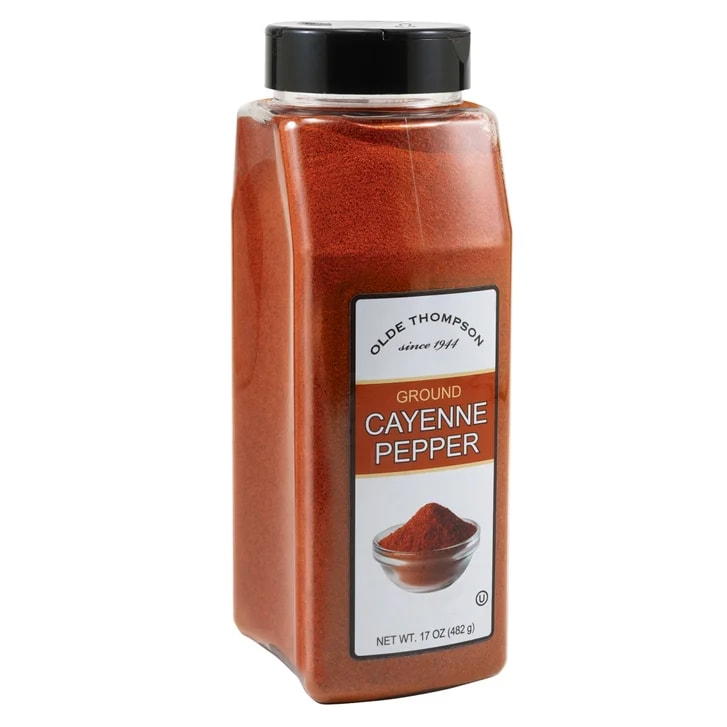
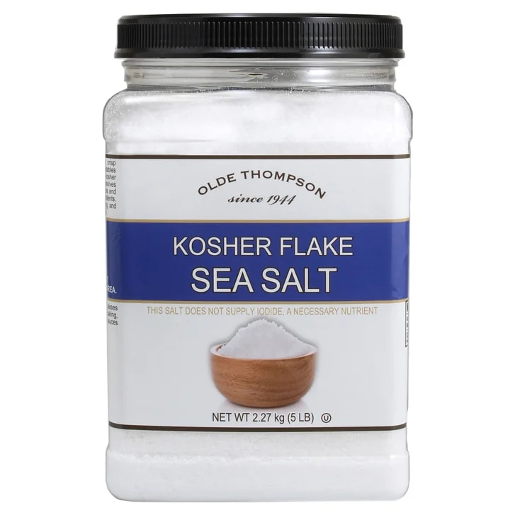
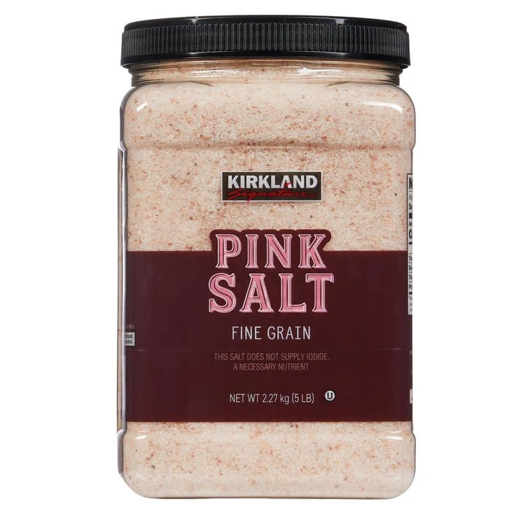
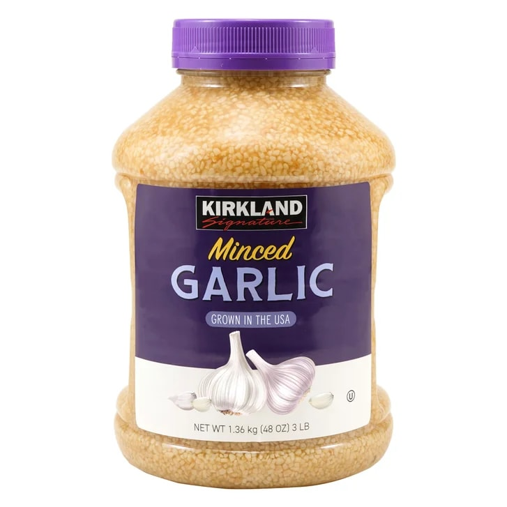
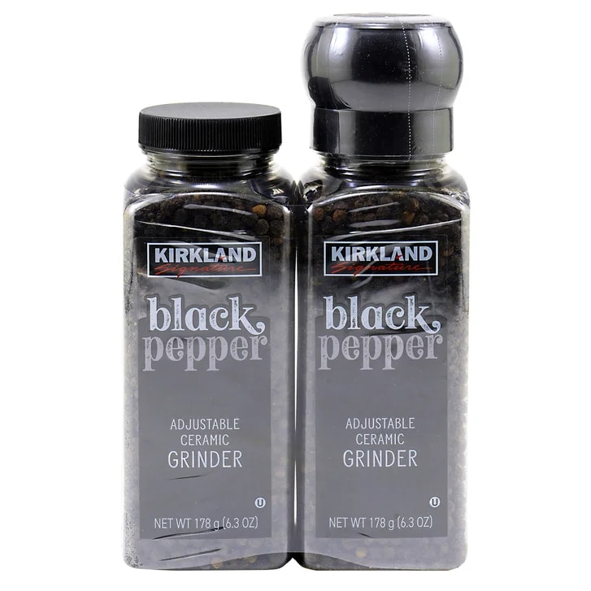

Costco · E-commerce Photography
Clean at scale.
Product capture, retouching and retail-ready deliveryThe Assignment
Make every package feel consistent, accurate and easy to buy.
For this Costco e-commerce assortment, the photography needed to do quiet, exacting work: preserve packaging color, reveal product texture and keep every item visually consistent across different materials, forms and sizes.
- Focus
- White-background product photography
- Delivery
- Color-corrected retail assets
- Categories
- Spices, salts and seasonings





01Capture
Controlled light, clean silhouette and readable packaging.
02Refine
Color accuracy, edge cleanup and material-specific retouching.
03Deliver
Consistent white-background assets prepared for e-commerce.

The Result